Java™ 13 Support
The release notably includes the following Java 13 features:
JEP 354: Switch Expressions (Preview).
JEP 355: Text Blocks (Preview).
Please note that these are preview language features and hence enable preview option should be on. For an informal introduction of the support, please refer to Java 13 Examples wiki.
Conditions under which this keyboard shortcut works are:
- The Java Project should have a compliance of 13 or above and the preview features should be enabled.
- The selection in the editor should not be part of a string or a comment or a text block.
Examples:
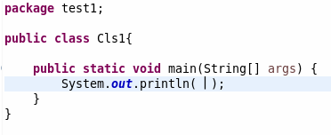
Pressing the shortcut gives: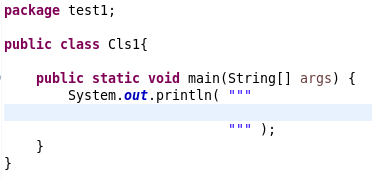
You can also encompass a selected text in text block as below:
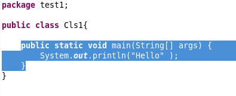
On pressing the shortcut, you get this: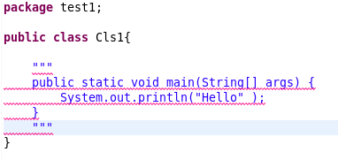
Java Editor
varargs parameters.
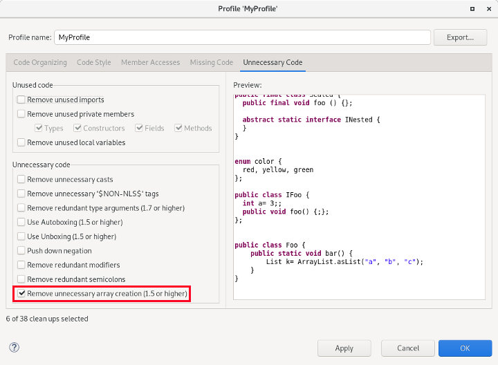
For the given code:
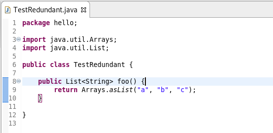
For instance:
!!isValid; becomes isValid;
!(a != b); becomes (a == b);
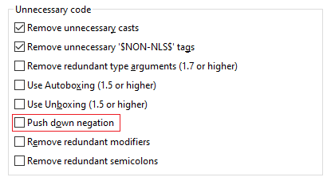
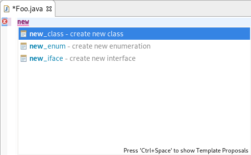
For example: Entering "input text".var and selecting the var - Creates a new variable proposal, will result in String name = "input text".
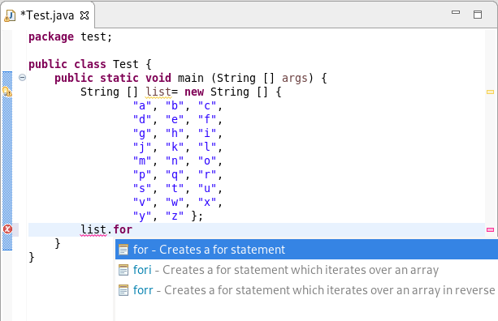
try-with-resources statement based on the selected lines. Lines that are selected
must start with declarations of objects that implement AutoCloseable. These declarations are added as
the resources of the try-with-resources statement.
If there are selected statements that are not eligible resources (such as Objects that don't implement AutoCloseable),
then the first such statement and all the following selected statements will be placed in the try-with-resources body.

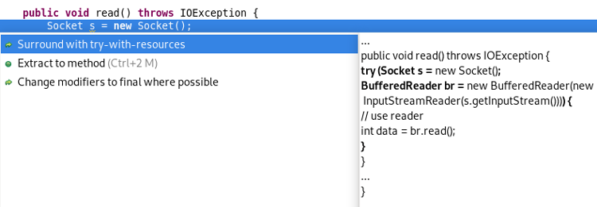
This results in: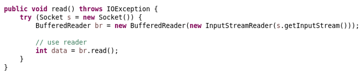
@uses and @provides tags depending on
the compiler settings (Preferences > Java > Compiler > Javadoc).
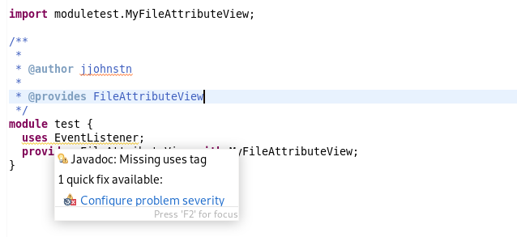
Java Formatter
By default, text block lines are indented the same way as wrapped code lines, that is with two extra tabs relative to the starting indentation (or whatever is set as Default indentation for wrapped lines in the Line Wrapping section). You can also set it to use only one tab for indentation (Indent by one), align all lines to the position of the opening quotes (Indent on column), or preserve the original formatting (Do not touch).
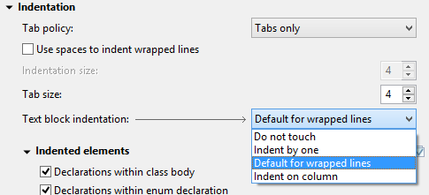
@param, @throws, @returns) and separate these groups with blank lines.
This feature can be turned on in the Comments > Javadocs section by checking the Blank lines between tags of different type box.
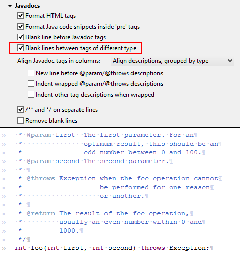
!) operator, independently from other unary operators.
To find it, expand sections Whitespace > Expressions > Unary operators and go to the last checkbox.
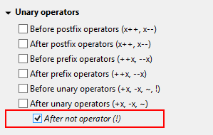
JUnit
org.eclipse.jdt.junit.runtime bundle is now J2SE-1.5.
Debug
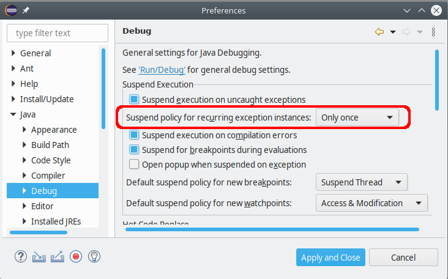 Debug"/>
This option is relevant when debugging an application that has try blocks at several levels of the architecture.
In this situation an exception breakpoint may fire multiple times for the same actual exception instance:
A throw statement inside a catch block may re-throw the same exception.
The same holds for each finally block or try-with-resources block.
When the debugger stops due to an exception breakpoint, you may want to continue your debug session by pressing
Resume (F8), but all that catching and re-throwing will force you to observe
all locations where the same exception will surface again and again. Suspending at all try blocks
on the call stack may also spoil your context of open Java editors, by opening more editors of classes that are
likely irrelevant for the debugging task at hand.
The JDT Debugger will now detect this situation, and the first time it notices the same exception instance recurring at the surface, a new question dialog is shown:
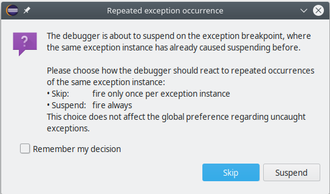
If you select Skip in this dialog, the current exception instance will be dismissed for good. Still, new instances of the same exception type will cause suspending when they are thrown.
If you check Remember my decision your choice will be stored in the mentioned workspace preference to be effective for all exception breakpoints.
Even after choosing Skip — resp. Only once in the preferences — you can have the old behavior simply by pressing Step Return (F7) instead of Resume.
JDT Developers
org.eclipse.jdt.ui.javaCompletionProposalComputer, org.eclipse.jdt.ui.javadocCompletionProposalComputer
and org.eclipse.jdt.ui.javaCompletionProposalSorters extension points now allow a new attribute requiresUIThread that allows
a developer to declare whether running in the UI thread is required or not.
This information will be used by the Content Assist operation to allow some optimizations and prevent UI freezes by reducing the amount of work happening in the UI thread.
To preserve backward compatibility, the default value for this attribute (if unset) is true, meaning the extension is expected to
run in the UI thread.